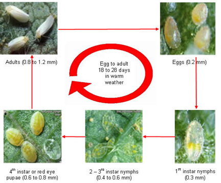

| Home |
| PULSES |
| 1. Bean Aphid |
| 2. Thrips |
| 3. Whitefly |
| 4. Green Leafhopper |
| 5. Pod Bug |
| 6. Lab-lab bugs / Stink bug |
| 7. leaf webber |
| 8. lab-lab leaf miner |
| 9. termites |
| questions |
| download notes |
PESTS OF PULSES :: Major Pests :: Whitefly
3. Whitefly: Bemisia tabaci (Aleyrodidae: Hemiptera)
Distribution and status: Cosmopolitan. It is a vector of yellow mosaic disease. Damage symptoms: The damage is caused by both nymphs and adults, which are found in large numbers. They suck plant sap and lower its vitality. Severe infestation results in premature defoliation, development of sooty mould or honey dew and shedding of flowers and pods. |
Bionomics: Adult is a minute insect with yellow coloured body with white waxy bloom. Nymph is greenish yellow, oval in outline along with puparia on the under surface of leaves.
 |
Management
- Grow black gram resistant varieties like ML 337, ML 5, MH 85-61, ML 325
- Spray the infested crop with malathion 50 EC 1.0 L or phosalone 50 EC 750 ml or dimethoate 30 EC 750 ml in 700 - 1000 L water per hectare.